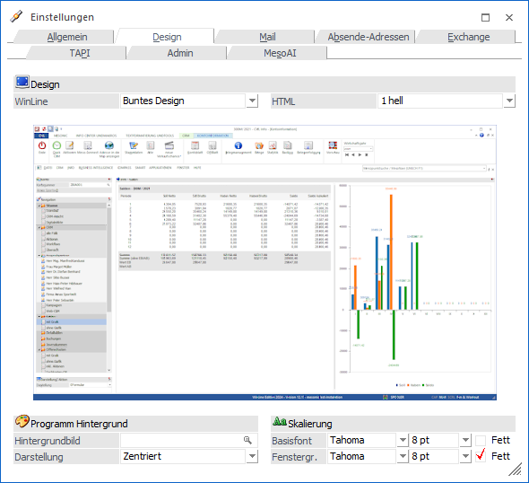
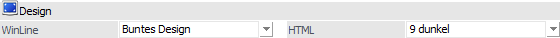
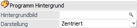
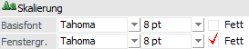
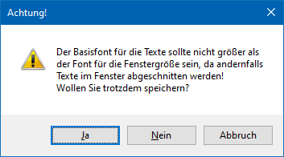

In dem Register "Design" kann definiert werden, wie das Programm dargestellt werden soll.
Hinweise
Dieses Register steht nur zur Verfügung, wenn die Bildschirmeinstellung mehr als 256 Farben darstellen kann. Des Weiteren werden alle hier vorgenommenen Änderungen erst nach einem Neustart der WinLine wirksam.

Design

Ø WinLine
An dieser Stelle kann das Design definiert werden, welches zur Darstellung der WinLine genutzt werden soll. Hierfür stehen folgende vordefinierte Designs zur Auswahl:
ü Rotes Design
ü Blaues Design
ü Buntes Design
ü Dunkles Design
ü Office 2010 Blue
ü Office 2010 Silver
ü Office 2010 Black
Hinweis
Nach der Auswahl eines vordefinierten Designs wird in der darunterliegenden Vorschau eine Beispielanzeige kreiert.
Ø HTML
Mit Hilfe dieser Einstellung kann das Grunddesign aller WinLine HTML-Ansichten definiert werden, wobei ein Design in "1 - hell" und eines in "9 - dunkel" zur Verfügung steht.
Hinweis
Zu den HTML-Ansichten zählen folgende Programmbereiche:
ü Neuigkeiten
ü WinLine Cockpit
ü WinLine Power Report
ü WinLine View 360
ü WinLine Kalender
ü WinLine Share
ü WinLine MesoMail
ü WinLine Score
ü WinLine TIME
Programm Hintergrund

Ø Hintergrundbild
An dieser Stelle kann ein Hintergrundbild ausgewählt werden, welches in den einzelnen Programmen angezeigt werden soll. Wahlweise kann eine Grafik verwendet werden, die bereits in der WinLine gespeichert wurde (siehe auch Kapitel Grafiken Importieren) oder eine Grafik, die auf dem lokalen PC oder im Netzwerk gespeichert ist.
Ø Darstellung
Mit dieser Einstellung kann gesteuert werden, wie das ausgewählte Hintergrundbild im Programm dargestellt werden soll. Hierfür stehen folgende Optionen zur Auswahl:
ü Zentriert
ü Gekachelt
ü Vollbild
Skalierung

In diesem Bereich kann eingestellt werden, wie groß die Fenster und die Fensterinhalte in der WinLine dargestellt werden sollen. Standardmäßig sind der Basisfont und die Fenstergröße auf 8 pt Tahoma eingestellt. Dies bedeutet, dass die Fenster bei einer hohen Auflösung relativ klein dargestellt werden. Damit die Fenster und deren Inhalt "größer" bzw. die Schriftart angepasst werden können diese Einstellungen bearbeitet werden.
Ø Basisfont
Der Basisfont gibt die Schriftart / Schriftgröße an, mit der der Inhalt der Fenster dargestellt werden soll. Zusätzlich zur Fontgröße (z.B. 8 pt) kann auch die Schriftfamilie (hier werden in der Auswahlliste alle Schriftfamilien angeboten, die auch im WinLine CTK hinterlegt wurden) und das Attribut "Fett" eingestellt werden.
Ø Fenstergr.
Über die Fenstergröße kann gesteuert werden, mit welcher Basisschriftart das Fenster aufgebaut werden soll. Sinnvollerweise sollte bei der Fenstergröße die gleiche Größe oder aber eine größere Schriftart verwendet werden, als beim Basisfont. Auch hier kann neben der Schriftart und Schriftgröße das Attribut "Fett" aktiviert werden.
Beim Speichern des Fensters wird geprüft, ob die Fontgrößen "zusammenpassen". Wenn z.B. der Basisfont mit einer größeren Schriftart definiert wurde, als die Schriftart für die Fenstergröße, dann wird eine entsprechende Meldung ausgegeben:

Wird die Meldung mit "JA" bestätigt, dann wird die Änderung trotzdem gespeichert. Nach dem Neustart der WinLine kann es dann allerdings dazu kommen, dass Fensterinhalte dann - wie in der Meldung angekündigt - abgeschnitten werden. Wird die Meldung mit NEIN bestätigt, dann wird diese eine Einstellung nicht gespeichert, ggf. andere Änderungen hingegen schon. Bei Bestätigung der Meldung mit "ABBRUCH" kann die Einstellung bezüglich der Schriftarten nochmals überarbeitet werden.